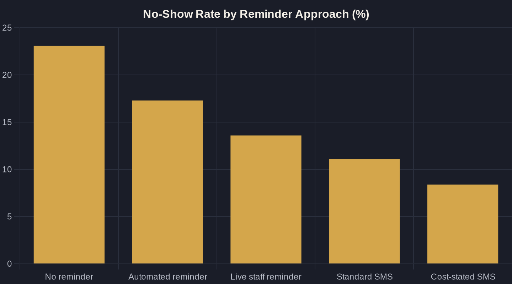

Cut No-Shows With Automated Appointment Reminders
A no-show is the most expensive gap on your calendar — you already paid to fill it. Here is what the research actually proves about reminders, and the Owner's Math that decides whether the fix is worth building.
Key takeaways
- Price a single no-show first. That number — your average ticket plus the ad spend that filled the slot — decides how much the fix is worth and is the foundation of the Owner's Math on reminders.
- The research is decisive: reminders cut non-attendance by a weighted mean of 34%, and just turning an automated reminder on dropped no-shows from 23.1% to 17.3% in a controlled study.
- Automation captures most of the win. Automated SMS reached an 11.7% miss rate versus 10.2% for live calls — comparable attendance at a fraction of the staff cost, which is why SMS is the practical default at volume.
- More touches keep paying. A second text on top of an existing reminder cut a pediatric clinic's no-shows by 14.6 points, and one extra targeted text reduced misses 7-11% across 158,000 visits.
- Copy is a free lever. An SMS that named the cost of a missed visit dropped no-shows to 8.4% versus 11.1% — a 24% relative reduction from one line, at zero added cost.
How to Reduce No-Shows: Start With What One Costs You
Every empty chair has a price. If you run a clinic, a med spa, or a home-services crew, a no-show is not just a gap in the calendar. It is a slot you paid to fill with ad spend, a clinician or technician you are paying to wait, and revenue that walked out the door. The first step in figuring out how to reduce no-shows is to put a dollar figure on one missed appointment, because that number decides how much effort the fix is worth.
This is the core of Owner's Math: trace what one dollar of marketing actually returns, from impression to lead to booked job to revenue. A no-show breaks that chain at the most expensive point, after you have already spent to acquire the booking. Cutting your no-show rate is one of the cheapest ROAS (return on ad spend) improvements available, because you are recovering revenue you already paid to create. For the full framework, see Owner's Math.
What the Research Actually Shows
The evidence here is unusually clean. A systematic review of 29 studies of telephone and SMS (text message) reminders found that sending reminders cut non-attendance by a weighted mean of 34%, with median no-shows falling from 23% to 13%. That is not a rounding error. It is roughly cutting missed appointments in half.
A controlled study in the American Journal of Medicine put hard numbers on it: no-shows ran 23.1% with no reminder, 17.3% with an automated reminder, and 13.6% with a live staff reminder. Simply turning an automated reminder on cut no-shows by about a quarter — before you optimize a single word of the message.
Automated vs. Manual: Automation Captures Most of the Win
Owners often assume a real person has to make the call for it to work. The data says otherwise. In the same systematic review, manual phone reminders performed best at a 39% relative reduction, with automated SMS and voice a close second at 29%. Automation captures most of the benefit at a fraction of the staff cost.
A head-to-head randomized trial of 6,450 patients makes the trade-off concrete: automated texts produced an 11.7% missed-appointment rate versus 10.2% for live telephone reminders — statistically comparable attendance at a far lower per-message cost. That 1.5-point gap is why SMS is the practical default for any practice booking real volume. Your front desk's time is better spent on the customers in front of them than on a call list.
More Touches Keep Paying, Even If You Already Send One
If you already send one reminder, a second still moves the number. In a randomized trial at a pediatric clinic, patients who got a text on top of the standard voice reminder had a 23.5% no-show rate versus 38.1% for the control group, a 14.6-point drop. The text did not replace the call. It stacked on it.
At scale, the pattern holds. A pragmatic study of roughly 158,000 visits found one extra targeted text reminder reduced no-shows by 7% in primary care and 11% in mental-health visits, and cut same-day cancellations by 6%. An automated sequence — a confirmation at booking, a reminder the day before, a nudge the morning of — costs nothing extra once it is built, and each touch keeps earning.
| Reminder approach | No-show rate | Study |
|---|---|---|
| No reminder | 23.1% | Parikh et al., Am. J. Medicine (2010) |
| Automated reminder | 17.3% | Parikh et al., Am. J. Medicine (2010) |
| Live staff reminder | 13.6% | Parikh et al., Am. J. Medicine (2010) |
| Automated SMS | 11.7% | Junod Perron et al., BMC HSR (2013) |
| Live telephone reminder | 10.2% | Junod Perron et al., BMC HSR (2013) |
| Standard SMS | 11.1% | Hallsworth et al., PLoS One (2015) |
| SMS stating the cost of a missed visit | 8.4% | Hallsworth et al., PLoS One (2015) |

The Words in the Message Matter
Once the system is running, copy is your free lever. Two randomized trials totaling nearly 20,000 patients showed that an SMS stating the cost of a missed appointment dropped no-shows to 8.4% versus 11.1% for the standard reminder — about a 24% relative reduction from one line of copy, at no added cost.
For a local business, the equivalent is naming the real stakes plainly: the slot you held, the deposit on the line, or the wait other customers face. Keep it specific and human, give a one-tap way to confirm or reschedule, and make canceling easy. A freed slot you can refill beats a silent no-show every time.
Make It Part of the System, Not a Staff Chore
The reason reminders fail in practice is rarely the message. It is that they depend on a busy human remembering to send them. The fix is to wire reminders into the same automated layer that runs the rest of your front office. That is exactly what AI Marketing and Automation for Local Service Businesses is built to do: handle the repetitive, revenue-protecting touches without adding to anyone's to-do list.
Reminders also work best alongside the other places bookings leak. Pair them with Missed-Call Text-Back: Recover the Leads You're Losing so a missed call becomes a booked slot, and with an AI Receptionist that never misses a lead call so reschedules get answered the moment they come in. Once the appointment is kept and the visit goes well, AI Review Management automates the request and reply that turns the result into your next customer's first impression.
The Owner's Math on Reminders
Run the numbers on your own shop. If you book 200 appointments a month at a 23% no-show rate, that is 46 missed slots. Reduce that rate to 13% — squarely in the range the research supports — and you save 20 appointments a month. Multiply by your average ticket and the reminder system pays for itself many times over in the first month.
Reminders are the rare growth lever that is cheap to build, backed by hard evidence, and recovers revenue you have already paid to create. If you want help mapping your no-show rate to real dollars and wiring the automation into your booking flow, that is exactly what the Owner's Math newsletter and a working session are built for. Start by measuring your number — then make the calendar protect it for you.
Sources
- Hasvold & Wootton, 'Use of telephone and SMS reminders to improve attendance at hospital appointments: a systematic review,' Journal of Telemedicine and Telecare (2011)
- Parikh et al., 'The effectiveness of outpatient appointment reminder systems in reducing no-show rates,' The American Journal of Medicine (2010)
- Lin et al., 'Text Message Reminders Increase Appointment Adherence in a Pediatric Clinic: A Randomized Controlled Trial,' International Journal of Pediatrics (2016)
- Ulloa-Perez et al., 'Pragmatic Randomized Study of Targeted Text Message Reminders to Reduce Missed Clinic Visits,' The Permanente Journal (2022)
- Junod Perron et al., 'Text-messaging versus telephone reminders to reduce missed appointments in an academic primary care clinic: a randomized controlled trial,' BMC Health Services Research (2013)
- Hallsworth et al., 'Stating Appointment Costs in SMS Reminders Reduces Missed Hospital Appointments: Findings from Two Randomised Controlled Trials,' PLoS One (2015)
Want this run on your numbers?
Book a call and we will run the Owner's Math on your business — clear numbers, a straight plan, no pitch. Or read the free Playbook first.